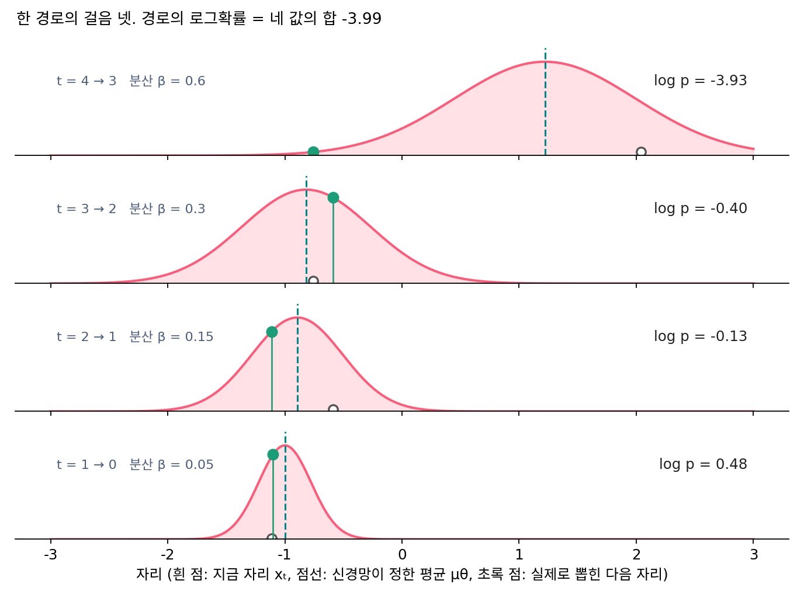

부록 A — 강화학습으로 이어지는 다리
이 장의 물음
그림 생성 서비스에는 같은 프롬프트로 만든 두 그림 가운데 사람이 어느 쪽을 골랐는지가 쌓인다. 웹 앱 Pick-a-Pic 이 모은 기록은 비긴 쌍을 빼고도 85만 1,293쌍이다. 언어모델은 학습이 끝난 뒤 이런 기록이나 채점 규칙(보상)으로 한 번 더 고친다. 사람이 고른 쪽을 더 자주 내도록 고치는 방법들(RLHF, DPO, GRPO)이 그 도구다. 이 도구들은 두 가지에 기댄다. 모델이 낸 답의 로그확률을 잴 수 있어야 하고, 같은 질문에도 뽑을 때마다 다른 답이 나와 견줄 거리가 있어야 한다. 언어모델에서는 둘 다 저절로 갖춰진다. 문장의 로그확률은 토큰마다의 로그확률을 더한 값이고, 토큰은 확률에 따라 뽑힌다.
디퓨전 모델은 그림을 한 번에 내지 않는다. 잡음에서 출발해 여러 걸음을 걷고, 걸음마다 신경망을 한 번 부른다. 걸음마다 새 잡음을 넣는 샘플러도, 넣지 않는 샘플러도 있다. 그림 하나의 로그우도는 직접 잴 수 없어서 그 아래에 받친 바닥(ELBO)으로 배웠다. 이런 모델을 사람의 선호나 보상으로 고치려면 무엇이 언어모델의 그 자리에 서야 할까? 영상을 자기 과거로 굴리며 「진짜 영상다움」 쪽으로 배우던 모델에, 진짜 영상다움 대신 사람이 원하는 점수를 앉히려 할 때도 같은 물음을 만난다. 이 부록은 다음 물음에 차례로 답하며, 『생성모델의 강화학습』이 디퓨전 쪽에서 기대는 것을 이 책의 말로 묶는다.
- 디퓨전 생성에서 언어모델의 토큰 하나에 해당하는 것은 무엇이고, 그 확률은 잴 수 있을까?
- 같은 모델인데 어떤 샘플러로 걸으면 보상으로 고칠 수 없다고 한다. 왜일까? 결정적인 걸음으로 그림을 뽑는 플로우 모델은 어떻게 할까?
- 그림 하나의 로그확률 대신 바닥만 잴 수 있다면, 선호 쌍으로 배우는 DPO 는 바닥으로 버틸 수 있을까?
- 강화학습 책의 다른 낱말들, 이를테면 레퍼런스 모델, 길이 편향, 리워드 해킹은 디퓨전에서 무엇이 될까?
걸음의 로그확률: 생성의 한 걸음을 행동 하나로 읽기
언어모델을 보상으로 고치는 가장 기본적인 방법은 이렇다. 답을 하나 뽑아 보상을 받고, 보상이 좋으면 그 답이 다시 나올 확률을, 나쁘면 덜 나올 확률을 키운다. 실제 계산은 그 답의 로그확률을 매개변수로 미분한 기울기에 보상을 곱해 모델을 미는 것이다(REINFORCE 라는 이름의 방법이다). 답 한 줄의 로그확률은 토큰마다의 로그확률을 더한 것이므로, 토큰 하나를 모델이 고른 행동 하나로 볼 수 있다. 행동을 고르는 확률 규칙, 곧 언어모델에서는 다음 토큰의 분포를 강화학습에서는 정책(policy)이라 부른다.
디퓨전에서 그림 한 장은 걸음 T번 끝에 나온다. 보상은 그림을 다 그린 뒤 한 번 받는다. 그렇다면 언어모델의 토큰 자리에 걸음을 놓으면 될까? 그러려면 걸음 하나하나에도 확률이 있어야 한다.
역사: 그림 한 장을 여러 번의 결정으로
2023년 5월 블랙(Kevin Black), 재너(Michael Janner), 두(Yilun Du), 코스트리코프(Ilya Kostrikov), 레빈(Sergey Levine)은 「강화학습으로 디퓨전 모델 학습하기」를 내놓았다. 논문 요약은 이렇게 시작한다. 디퓨전 모델은 로그우도에 가까운 목표로 학습되지만, 쓰는 사람이 실제로 바라는 것은 우도가 아니라 사람이 보기에 좋은 그림, 약의 효과 같은 다른 목표다. 그런 목표는 프롬프트를 고쳐 쓰는 것만으로는 잘 맞춰지지 않는다. 이들은 잡음을 걷어 내는 과정을 여러 걸음의 결정 문제로 보고, 그림이 얼마나 잘 압축되는지, 사람의 평가로 배운 미적 점수, 시각언어모델이 판정한 프롬프트와 그림의 맞음 같은 보상으로 모델을 고쳤다. 마지막 보상은 새 데이터를 모으거나 사람이 라벨을 붙이지 않고도 얻는다. 이 방법의 이름이 DDPO(잡음 제거 디퓨전 정책 최적화 / denoising diffusion policy optimization)다.
네 걸음 사슬의 한 경로
걸음의 확률을 직접 재 보려고, 데이터가 두 점 ±1 이고 잡음 섞기가 네 걸음(한 걸음 분산 βt = 0.05, 0.15, 0.3, 0.6)뿐인 사슬을 쓰자. DDPM 손실이 정말 ELBO 인지 확인할 때 쓴 장난감과 같은 사슬이고, 신경망 자리에는 이 데이터에서 가장 잘 배운 잡음 예측을 식으로 넣는다. 사슬을 거꾸로 걷는 한 걸음은 DDPM 의 꼴 그대로다. 신경망이 다음 자리의 평균 μθ를 정하고, 분산 βt인 잡음을 더해 다음 자리를 뽑는다. 다음 자리가 정규분포에서 뽑히므로, 실제로 뽑힌 자리의 로그확률은 식 하나로 적힌다.
x₄ = 2.041 에서 출발한 경로 하나를 뽑아 보았다.
| 걸음 | 지금 자리 | 평균 μθ | 분산 βt | 뽑힌 다음 자리 | 걸음의 로그확률 |
|---|---|---|---|---|---|
| 4 → 3 | 2.041 | 1.220 | 0.6 | −0.759 | −3.929 |
| 3 → 2 | −0.759 | −0.818 | 0.3 | −0.589 | −0.404 |
| 2 → 1 | −0.589 | −0.894 | 0.15 | −1.114 | −0.132 |
| 1 → 0 | −1.114 | −1.000 | 0.05 | −1.101 | 0.476 |
첫 걸음은 평균 1.220 에서 2.0 가까이 떨어진 자리로 뛰어 로그확률이 −3.929 로 낮다. 넷째 걸음도 평균에서 0.1 떨어진 자리에 내렸지만, 분산이 0.05 로 좁은 종이라 봉우리 근처의 밀도가 1보다 커서 로그확률이 양수다. 로그확률은 확률이 아니라 밀도의 로그라서 양수일 수 있다. 네 값의 합은 −3.989 이고, 출발 잡음의 로그확률 log N(2.041; 0, 1) = −3.002 를 더하면 이 경로 전체의 로그확률 −6.991 이 된다. 신경망을 부를 때마다 평균이 나오고 분산은 잡음 일정에 이미 적혀 있으니, 경로를 기록해 두기만 하면 이 값은 신경망을 다시 불러 바로 계산된다.

걸음마다 정규분포라서 실제로 뽑힌 자리에 대해 식 하나로 계산되는 이 값을 걸음의 로그확률 (역방향 한 걸음이 실제로 뽑힌 다음 자리에 준 로그확률 / per-step log-probability)이라 하자. 경로의 로그확률은 걸음의 로그확률의 합이다. 언어모델에서 토큰의 로그확률을 더해 문장의 로그확률을 얻는 것과 같은 모양이다.
다만 이것은 경로 하나의 값이다. 이 경로가 닿은 그림 x₀ = −1.101 에 이르는 경로는 이것 말고도 끝없이 많다. 그림 하나의 로그 밀도는 그 모든 경로의 확률을 더해야 나온다. 이 장난감은 1차원이라 격자 위에서 적분할 수 있고, 그 값은 −0.236 이다. 경로의 로그확률과는 다른 양이다. 수십만 개의 수로 된 진짜 그림에서는 이 적분을 할 수 없다. 걸음의 로그확률이 쓰이려면 분산 βt가 정해진 양수여야 한다는 점도 기억해 두자.
ML에서: 보상을 걸음마다 나눠 싣는다
그림 한 장을 걸음 T개짜리 행동의 줄로 보면, 언어모델의 REINFORCE 가 그대로 옮겨 온다. 보상은 끝의 그림에 한 번 붙고, 기울기는 경로의 걸음마다 나뉜다.
여기에 필요한 것은 뽑을 때 기록해 둔 걸음들의 로그확률뿐이고, 그림 하나의 로그확률은 필요 없다. DDPO 는 이 꼴(보상을 곱한 걸음 로그확률의 기울기)과, 언어모델 강화학습에서 쓰던 대로 학습 중에 바뀐 정책의 확률 비를 잘라 쓰는 꼴을 함께 시험했다.
문제 1. 출근길의 갈림길
민준의 출근길에는 갈림길이 세 곳 있다. 첫 갈림길에서 큰길로 갈 확률 0.7, 둘째에서 다리를 건널 확률 0.5, 셋째에서 지하도로 갈 확률 0.9 이고, 갈림길마다 따로 고른다. (가) 오늘 민준이 「큰길 → 다리 → 지하도」로 왔을 확률과 그 로그는? (나) 민준이 회사에 도착할 확률은? (다) (가)의 값을 「회사에 도착할 확률」로 써도 될까?

곱하면 0.7 × 0.5 × 0.9 = 0.315 예요. 로그는 −0.357 − 0.693 − 0.105 = −1.155 고요.

회사에 도착할 확률은요?

어… 오늘 온 길이 0.315 니까 그것도 0.315 아닌가요?

다른 길로 와도 회사에는 도착하잖아. 길이 여덟 가지고 어느 길이든 회사로 가니까, 여덟 길의 확률을 다 더하면 1 이야.

그래요. 길 하나의 확률은 갈림길마다의 확률을 곱하면 되지만, 도착지의 확률은 그 도착지로 가는 모든 길을 더해야 해요. 앞의 네 걸음 사슬에서 경로 하나의 로그확률과 그림 하나의 로그 밀도가 달랐던 것도 같은 까닭이에요.

과제 제출 경로가 메일, 게시판, 직접 내기 셋인데, 메일로 낼 확률을 「과제를 낼 확률」이라고 하면 안 되는 거랑 같네요.
문제 2. 분산을 줄이면
역방향 한 걸음의 평균이 0 이고 실제로 뽑힌 자리가 평균에서 0.1 떨어졌다(1차원). (가) 분산이 0.6, 0.006, 0.0006 일 때 걸음의 로그확률은 각각 얼마인가? (나) 분산이 0.0006 일 때, 평균 자리에 정확히 내렸다면 로그확률은? (다) 분산을 0 으로 두면, 곧 걸음마다 잡음을 넣지 않으면 걸음의 로그확률은 어떻게 되는가?
식에 넣었어요. 0.6 이면 −0.672, 0.006 이면 0.806, 0.0006 이면 −5.543 이에요. 0.006 에서 왜 커졌다가 다시 줄죠?
식의 두 항이 분산에 따라 어떻게 움직이는지 따로 볼까요?
뒤의 −½log(2π분산)은 분산이 줄면 커지고, 앞의 어긋남 항 −0.01/(2분산)은 분산이 줄면 더 크게 음수가 돼. 0.006 까지는 종이 좁아져 봉우리가 높아지는 몫이 이기고, 0.0006 이면 0.1 이 종의 폭(0.024)의 네 배가 넘어서 어긋남 항이 이겨.
(나)는 어긋남이 0 이니까 2.790 이고요. 그럼 (다)는 분산 0 이면… 평균 자리는 +∞, 나머지는 −∞ 네요.

그건 값이라고 할 수가 없어. 다음 자리가 한 점으로 정해져서, 「그 자리에 내릴 확률」이라는 말 자체가 뜻이 없어지는 거야.

맞아요. 잡음을 넣지 않는 걸음에는 걸음의 로그확률이 없어요. 기울기도 마찬가지고요. 이게 다음에 볼 문제의 출발점이에요.

정규분포의 분산을 0 으로 보내면 디랙 델타가 된다고 배운 거네요. 밀도가 함수로는 남지 않아요.